When I started this project, my goal was simple: when a deal is marked Closed Won in Salesforce, automatically send the contract to the right person for signing — no manual steps, no chasing emails, no missed documents.
What I didn't expect was how many undocumented gotchas sat between me and a working integration. This article walks through exactly what I built, what broke, and what I learned — so you don't have to spend hours figuring it out yourself.
The Stack
- Salesforce Developer Org (free)
- DocuSign Developer Account (free)
- DocuSign Apps Launcher — AppExchange package
- Salesforce Flow — zero Apex, zero code
First things first
The DocuSign Developer Account: The Engine, Not the Workshop
Before touching Salesforce, you need a free DocuSign developer account at developers.docusign.com.
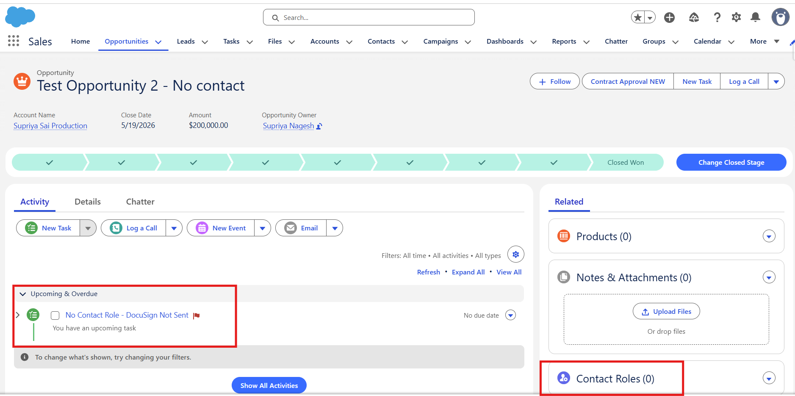
⚡ Key insight
You don't build anything in your DocuSign developer account. No templates, no configuration, no setup screens to fill out. Its only job is to be the authorized DocuSign account that Salesforce sends envelopes through. Everything you actually configure — templates, recipients, field mappings — lives entirely inside Salesforce.
Think of it as the engine under the hood. Once you have it, you'll use it exactly once to authenticate during Salesforce setup. After that, you'll mostly forget it exists — until you check your DocuSign inbox and see every test envelope you sent sitting there, signed and completed.
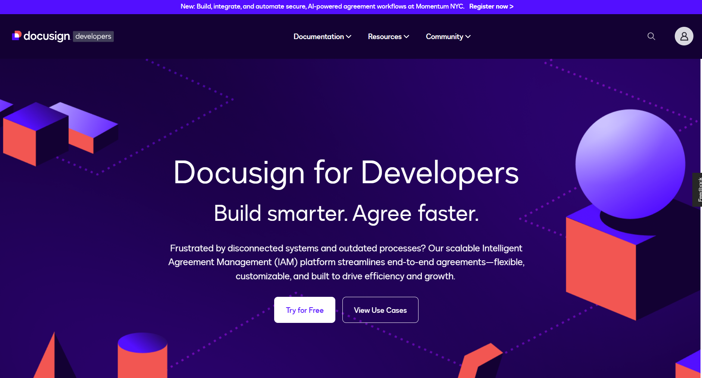
One thing worth knowing: you sign up and manage your developer account at developers.docusign.com — but the actual sandbox application where envelopes are sent, completed, and stored lives at demo.docusign.net. They're the same account, two different interfaces. Think of developers.docusign.com as the registration desk and demo.docusign.net as the actual office where the work happens.
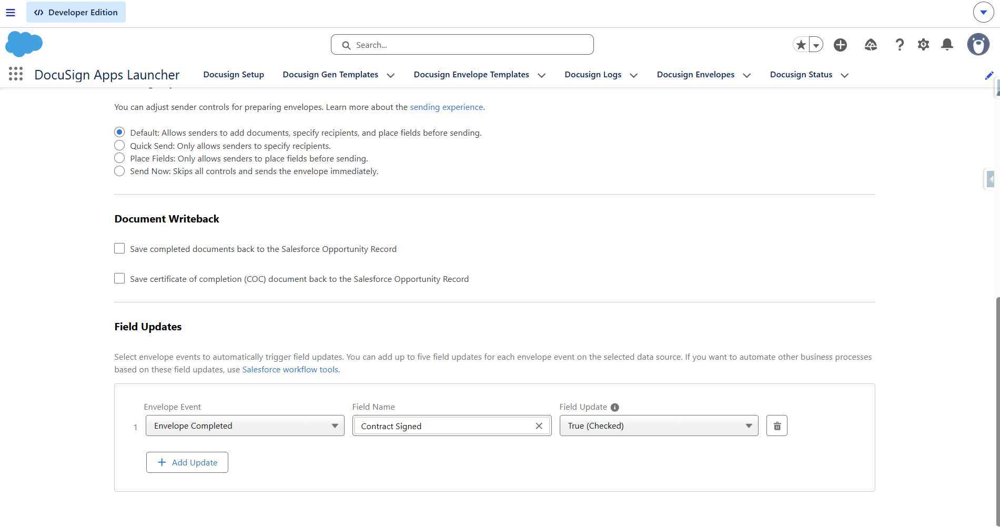
AppExchange
The AppExchange Package: It's Free to Install (Let Me Explain the $30)
Search "DocuSign" on the Salesforce AppExchange and you'll immediately see $30/user/month in the listing. Before you close the tab — here's what that price actually means.
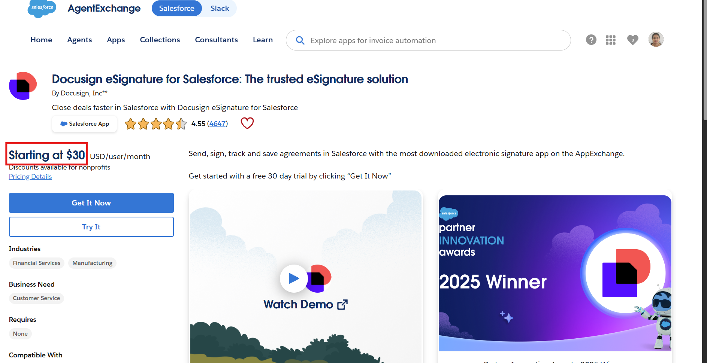
The package — called DocuSign Apps Launcher — is free to install. It bundles three products together:
| Product | What it does | Cost for dev/testing |
|---|---|---|
| DocuSign eSignature for Salesforce | Send documents for e-signature | ✅ Free with developer account |
| DocuSign Gen for Salesforce | Auto-generate sales documents | ⚠️ 30-day trial, then paid |
| DocuSign Negotiate for Salesforce | Contract negotiation workflows | ⚠️ Paid |
The $30 is the DocuSign eSignature subscription for production use with real users. For a developer org, your free developer account covers everything you need. The package installs at no charge and eSignature works indefinitely in your sandbox.
⚠️ Watch out
When connecting for the first time, you'll see two login options. Do not click the main "Log in to DocuSign" button — that connects to a production account. Scroll down and use "Log in to a Demo Account" instead. This points to demo.docusign.net, which is where your developer account lives. One wrong click here and you'll be trying to authenticate against a production account you don't have.
The package also handles its own security configuration — trusted URLs, CSP headers, all of it. No manual setup needed. It just works.
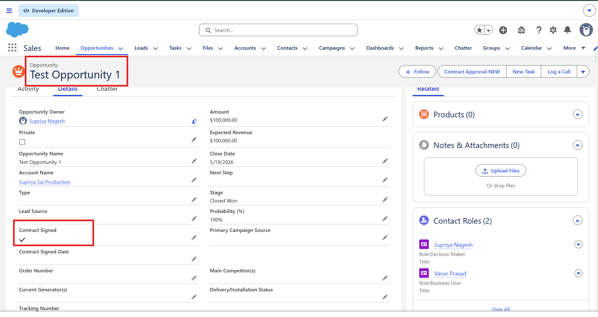
Authentication
Connecting DocuSign to Salesforce
After installing the package:
- Open App Launcher → search DocuSign Apps Launcher
- Go to the DocuSign Setup tab
- Look for "Log in to a Demo/Developer Account" — this is the critical option
- Log in with your developer account credentials
- Grant permissions — you'll be redirected back to Salesforce with a green connected status
- Assign the DocuSign Sender and DocuSign Administrator permission sets to your user via Setup → Permission Sets
That's the entire setup. No API keys. No configuration files. No code.
The trap that catches everyone
Creating the Envelope Template: Build It Inside Salesforce, Not DocuSign
🚫 Common mistake
When you think "DocuSign template," your instinct is to go to appdemo.docusign.com and build one there. I did exactly that — spent time creating a template, adding signature fields, saving it. Completely useless for what we're building. The Envelope Template must be created inside Salesforce, through the DocuSign Apps Launcher.
Here's why: the Salesforce-side template is stored as a Salesforce record with its own Salesforce Record ID. The Flow action requires that Salesforce Record ID — not the DocuSign UUID.
To create it:
- In DocuSign Apps Launcher → eSignature tab → DocuSign Envelope Templates → New
- Set the related object to Opportunity
- Upload your document
- For the recipient, select Related List → Contact Roles — this maps the recipient dynamically from whoever is linked to the Opportunity
- Place signature fields on the document
- Save
After saving, open the template and look at the browser URL:
.../lightning/r/dfsle__EnvelopeTemplate__c/a0Xxx000000xxxEAA/view
That a0Xxx... value is your Template ID. Copy it — you'll need it in the Flow.
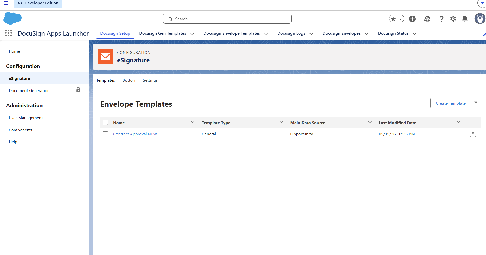
Where it all comes together
The Flow: Automating the Entire Process
Go to Setup → Flows → New Flow → Record-Triggered Flow.
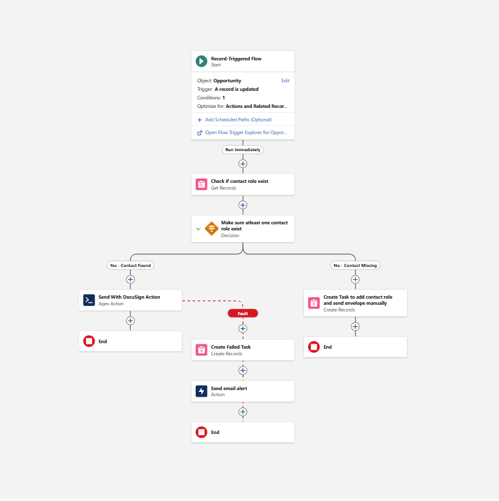
Trigger setup
- Object: Opportunity
- Trigger: Record is updated
- Condition: Stage = Closed Won
- When to run: Only when updated to meet conditions
Element 1 — Check for Contact Role first
Before sending anything, the Flow checks whether a Contact Role exists on the Opportunity. If there's no recipient, there's no point sending.
Add a Get Records element:
- Object: Opportunity Contact Role
- Filter: Opportunity ID = Triggering Opportunity ID AND Role = Decision Maker
- Return first record only
💡 Why Decision Maker specifically?
Real Salesforce orgs are messy. An Opportunity can have multiple Contact Roles — a Champion, an Evaluator, a Decision Maker. If your Get Records element just returns the "first record," you have no control over who receives the contract. Filtering by Decision Maker means regardless of how many Contact Roles exist, DocuSign always sends to the right person. Sending a contract to the wrong person is worse than not sending it at all.
Then add a Decision element:
- Yes path: Contact ID is not null → proceed to send
- No path (default): Create a Task on the Opportunity
The Task on the No path should say: "No Contact Role found on this Opportunity. Please add a Contact Role and send the DocuSign contract manually." This prevents silent failures and keeps the owner informed.
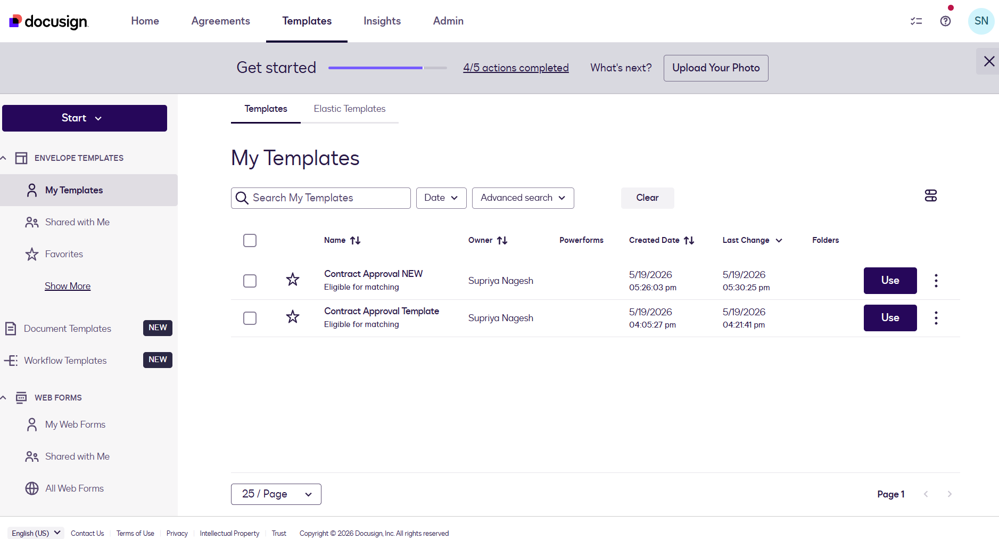
Element 2 — Send with DocuSign action
On the Yes path, add an Action → search "Send with DocuSign":
| Field | Value |
|---|---|
| Template ID | a0Xxx000000xxxEAA (your Salesforce Record ID) |
| Source ID | {!$Record.Id} |
🐛 The gotcha that cost me an hour
When I first built this, I pasted the DocuSign UUID from the template URL on appdemo.docusign.com. The Flow threw this error:
System.StringException: Invalid id: e3139436-3f0c-456f-abd9-fe72c44a3f9e
Salesforce Apex expects an 18-character Salesforce Record ID — not a DocuSign UUID. The fix is using the ID from the Salesforce record URL, as described in Step 4.
Element 3 — Fault path
Every production-grade Flow should handle failure gracefully. Click the red Fault connector on the Send with DocuSign action and add a Create Records element for a Task:
| Field | Value |
|---|---|
| Subject | DocuSign Failed — Send Contract Manually |
| Priority | High |
| Description | {!$Flow.FaultMessage} |
| WhatId | {!$Record.Id} |
| OwnerId | {!$Record.OwnerId} |
Now if DocuSign fails for any reason — connectivity, invalid template, permission issue — the Opportunity owner gets a High Priority task with the exact error message, rather than the failure disappearing silently.
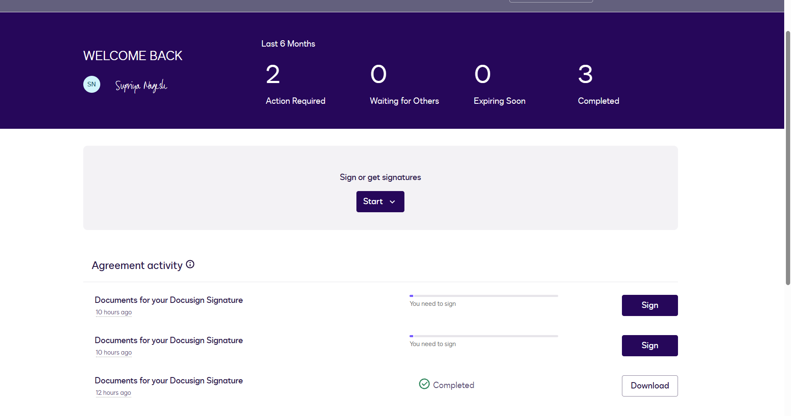
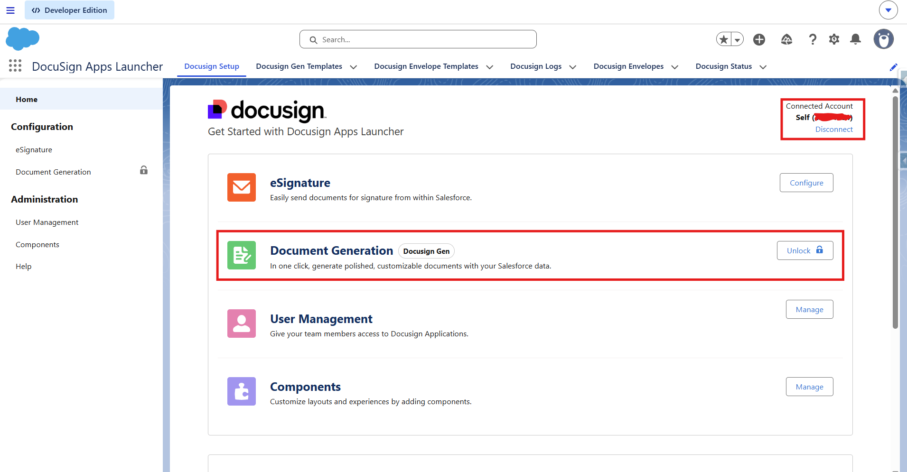
Closing the loop
Writing Back to Salesforce When the Document is Signed
At this point the automation only runs in one direction: Salesforce → DocuSign. When the recipient signs, DocuSign knows — but Salesforce has no idea. Here's how to close the loop.
- Create a custom Checkbox field on Opportunity: Contract Signed
- Inside the Envelope Template's Completed Actions step, map: Envelope Completed → Contract Signed = True
Now when the recipient signs, DocuSign calls back to Salesforce and checks that box automatically.
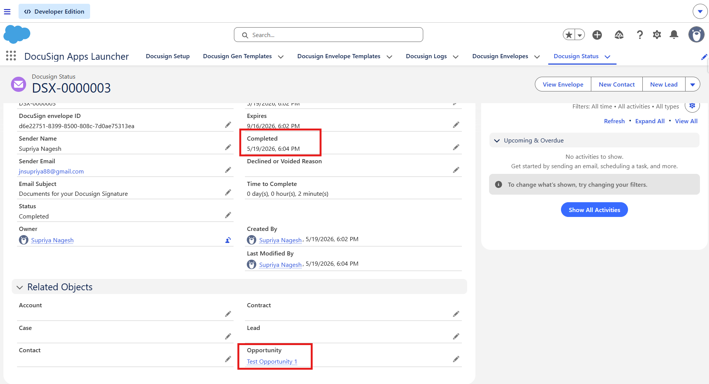
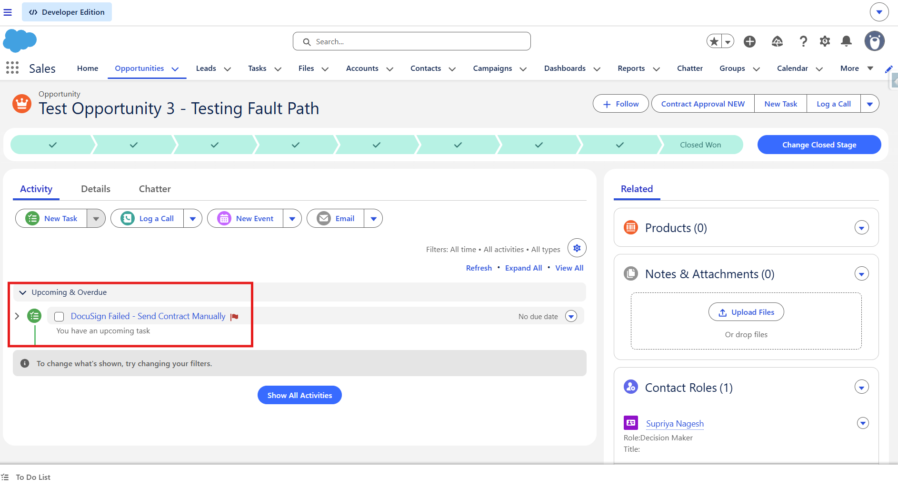
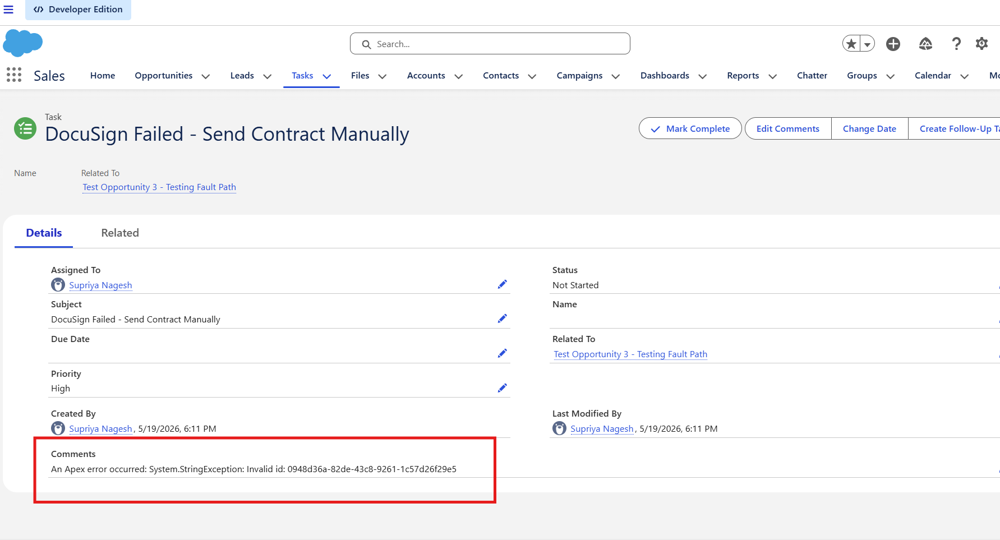
DocuSign signs → Contract Signed checkbox flips to True. Salesforce now knows the contract is done — no manual update, no follow-up email needed.
The Full Picture
Here's the complete end-to-end process that runs without any human intervention:
Opportunity → Closed Won
↓
Check: Contact Role (Decision Maker) exists?
↓ No ↓ Yes
Create Task Send DocuSign Envelope
(manual follow-up) ↓
↓ Fault Path
Create Task (error details)
↓
Recipient signs document
↓
DocuSign → Salesforce callback
↓
Contract Signed = ✅ True
What I Learned
Everything is configured inside the AppExchange package. Your DocuSign account is just the delivery mechanism.
This single gotcha cost me an hour. Use the ID from the Salesforce URL — not the UUID from appdemo.docusign.com.
Automated flows that fail silently are dangerous in a sales context. A missed contract because of a connectivity error, with no one notified, is a real business problem.
The Contact Role check before sending is the difference between a demo and a production-ready automation. Real Salesforce orgs are messy — not every Opportunity will have a Contact Role.
For learning, building, and portfolio purposes — this entire integration is completely free.
Try It Yourself
Everything in this article uses free tools. No paid subscriptions. No code. Just configuration, a few custom fields, and two Flows.
If you build this or run into different gotchas along the way, drop them in the comments — I'd love to know what else is hiding in this integration.
Built on Salesforce Developer Org · DocuSign Apps Launcher · Salesforce Flow